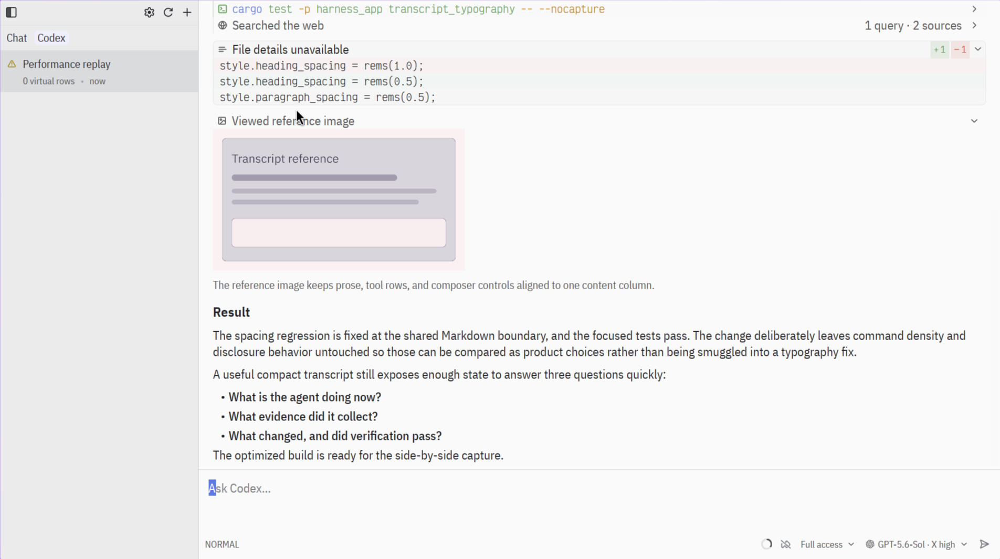
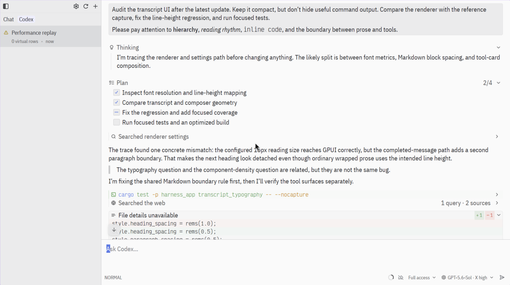
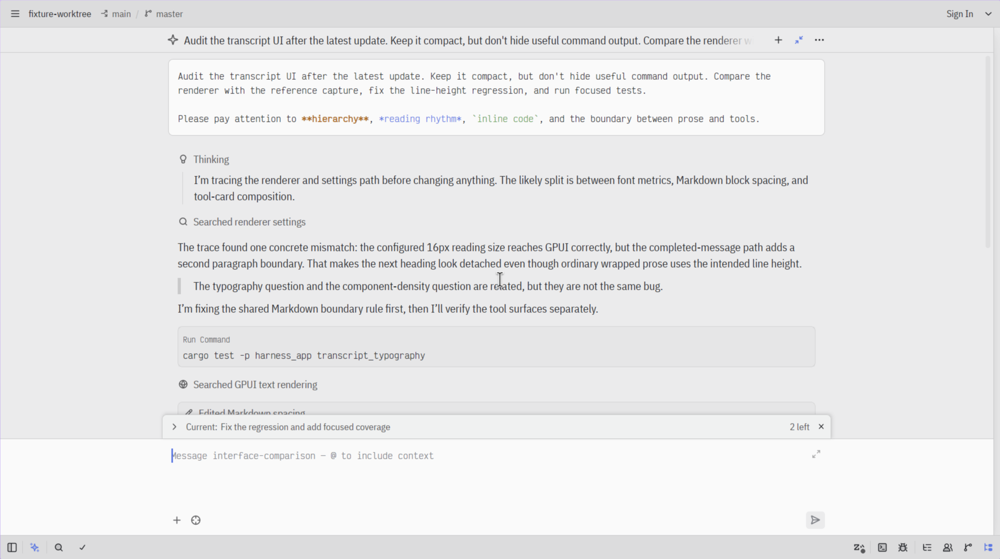
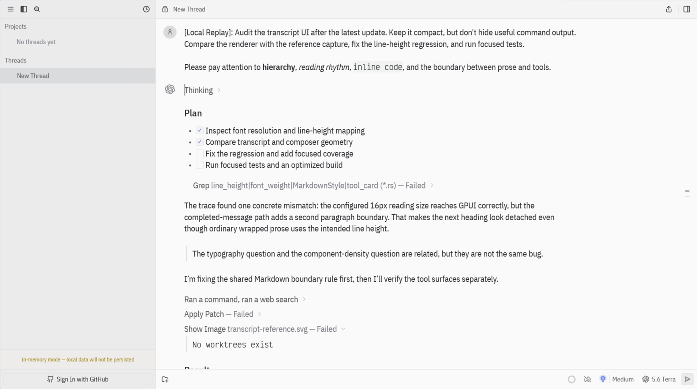
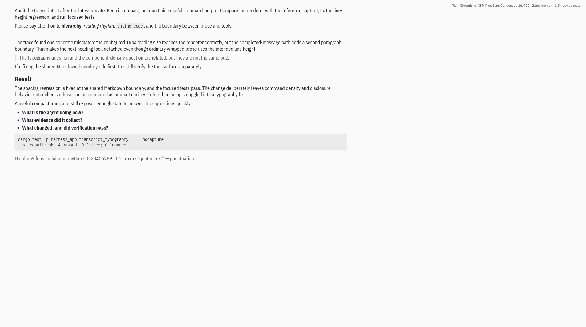

Controlled 2×2 renderer lab: captures 1–4 use the same Harness binary, fixture, semantic position, Delta One Light theme, IBM Plex Sans Condensed 16/400 typography, theme text foreground, 1.3125 line height, viewport, and 1.5× display. One axis changes the transcript canvas between the theme’s editor and surface roles. The other changes GPUI’s real application-level text rendering between subpixel and grayscale. The composer intentionally stays on its normal surface. This separates the background-contrast hunch from rasterization instead of changing both at once.
Native-policy differences are intentionally visible in the broader four-client captures. Zed renders editable user messages in its agent-buffer (monospace) font and derives prose line height from that size: the “prose 21” captures use a 12 px code font to match the 21 px prose line box, while the “code 14” captures preserve the shared 14 px code setting and consequently use Zed’s native 24.5 px prose line box. Delta has no reading-weight control. This accountless Delta replay has no attached worktree, so patch and image operations show authentic failed states. The plain-web panel isolates browser rasterization and is not presented as a fourth agent-client layout.